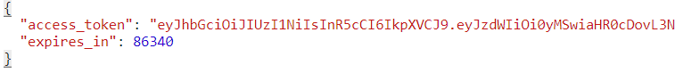

Upon logging into myCority, the system will obtain a JSON web token to authenticate the request. The token will be in the following format:

The client will store the token in the browser. When a user requests data from the Web API, the client will send the token to the Web API in the request header. Additional security and filtering will be applied based on the site security and the user’s granted modules. This works the same as in the Cority platform. By default, myCority users will be granted the ‘Portal’ role, which will allow them to use all features of the application.
The token will expire based on the value of the ‘Time Out in the Application’ system setting.
A user can also log into myCority as a guest. Guest access uses the same authentication protocol described above. A guest will have no records assigned to them, but will be able to create new records.